I'm in my last year of engineering at INSAT in Tunis, in Industrial Computing & Automation. I like going on the shop floor, seeing what people still do by hand, and building something that does it for them.
Je suis en dernière année d'ingénieur à l'INSAT, à Tunis, en Informatique Industrielle et Automatique. J'aime aller sur le terrain, voir ce que les gens font encore à la main, et construire un outil qui le fait pour eux.
This summer at Autoliv, that meant a planning tool that turned a 4-day job for a whole team into 20 minutes for one person. Below is what I've been up to, with the photos.
Cet été chez Autoliv, ça a donné un outil de planification : un travail de 4 jours pour toute une équipe se fait maintenant en 20 minutes par une seule personne. Plus bas, ce que j'ai fait ces dernières années, avec les photos.
Looking for a final-year internship (PFE) from February 2027Je cherche un stage de fin d'études (PFE) à partir de février 2027
I led the VIP & Protocol team of this student-run robotics event. That meant partnerships (GIZ Tunisia, TAA, BIWAI), official invitations to ministers and ambassadors, panel topics on the car industry and industrial security, and taking care of our international speakers from the airport to the stage.
J'ai dirigé l'équipe VIP & Protocole de cet événement de robotique entièrement organisé par des étudiants : partenariats (GIZ Tunisie, TAA, BIWAI), invitations officielles aux ministres et ambassadeurs, thèmes des panels sur l'automobile et la sécurité industrielle, et l'accueil de nos conférenciers internationaux, de l'aéroport jusqu'à la scène.
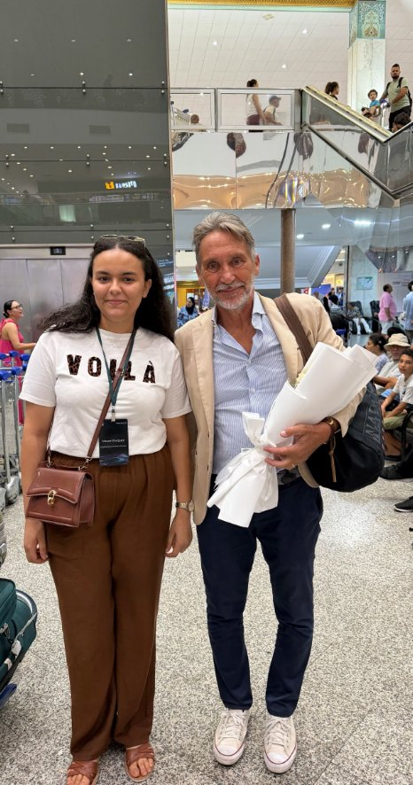
Welcoming Prof. Antonio Bicchi at Tunis airport.Accueil du Pr. Antonio Bicchi à l'aéroport de Tunis.
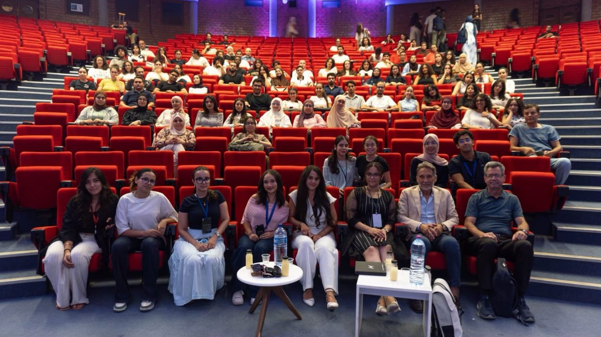
Speakers and organizers after a panel.Conférenciers et organisateurs après un panel.
“Maram Nouiguez, who seemed to be everywhere and took wonderful care of me.”
Prof. Antonio Bicchi, Editor in Chief of the International Journal of Robotics Research, on LinkedInrédacteur en chef de l'International Journal of Robotics Research, sur LinkedIn
Autoliv makes steering wheels in El Fahs. Every time a new product arrives, the plant has to decide which flow it goes into, how many machines each flow needs, and whether to buy new ones. A team from process, launch, logistics and quality used to spend more than 4 working days on it, by hand.
Autoliv fabrique des volants à El Fahs. À chaque nouveau produit, l'usine doit décider dans quel flux il entre, combien de machines il faut par flux, et s'il faut en acheter. Une équipe process, lancement, logistique et qualité y passait plus de 4 jours ouvrés, à la main.
I learned the method (the VS Matrix), did it once fully in Excel to understand every rule, then built a Python/Streamlit app that runs it, plus a drag-and-drop layout simulator. It now takes one person less than 20 minutes, and I was invited to do the same at the Nadhour plant.
J'ai appris la méthode (la VS Matrix), je l'ai faite une fois entièrement sous Excel pour comprendre chaque règle, puis j'ai créé une application Python/Streamlit qui l'exécute, avec un simulateur d'implantation en glisser-déposer. Ça prend maintenant moins de 20 minutes à une seule personne, et j'ai été invitée à faire la même chose à l'usine de Nadhour.
4+ daysjoursa team from 4 departmentsune équipe de 4 services
→
< 20 minone person, with the appune personne, avec l'appli
The best part was a 4-day VSM/VSD workshop on a high-runner product, with more than 20 people from 6 departments (APS, Industrial Engineering, Logistics, Finance, Operations, Quality). My group prepared the VS Matrix for the whole plant. Then we walked the line, mapped today's flow on one big wall, and drew tomorrow's.
Le meilleur moment : un atelier VSM/VSD de 4 jours sur un produit high-runner, avec plus de 20 personnes de 6 services (APS, Industrialisation, Logistique, Finance, Opérations, Qualité). Mon groupe a préparé la VS Matrix de toute l'usine. Ensuite on a fait le Gemba walk, dessiné le flux actuel sur un grand mur, puis le flux de demain.
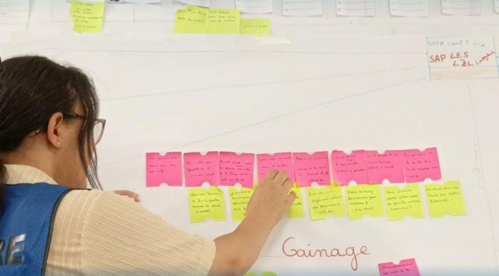
Me at the VSM wall. Every sticky note is a station, a problem or an idea.Devant le mur VSM. Chaque post-it est un poste, un problème ou une idée.
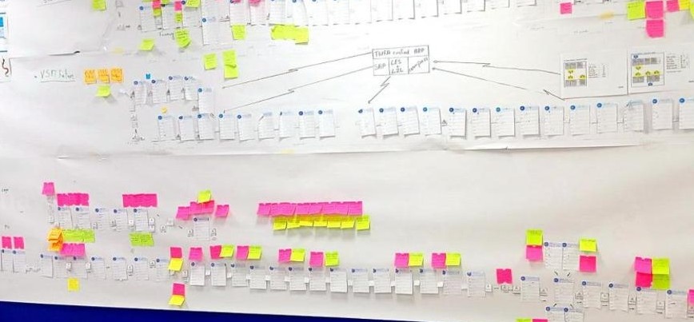
The whole flow of one product, from receiving to shipping.Le flux complet d'un produit, de la réception à l'expédition.
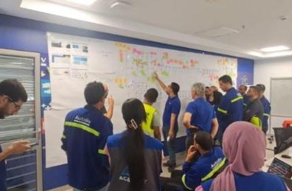
Six departments around the same wall.Six services devant le même mur.
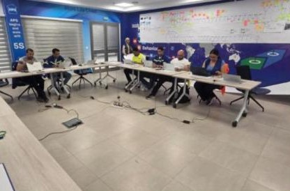
The workshop room.La salle de l'atelier.
Also: the plant's 5S Lean dashboard rebuilt in Python, and L2L, PLM and AutoCAD learned on the job.
Aussi : le tableau de bord Lean 5S de l'usine refait en Python, et L2L, PLM et AutoCAD appris sur place.
Jun 2026INSAT
Our final-year project: an inspection robot
Notre projet de fin d'année : un robot d'inspection
With Mohamed Amine Ayadi, Ahmad Bouzid and Mohamed Khalil Kouki, supervised by Pr. Saber Tlili. We built a robot that maps a factory and moves around it on its own (ROS2, Nav2, SLAM in a Gazebo world we modeled), reads a real gas sensor through an ESP32 running micro-ROS, and takes voice commands offline. The hardest part was getting six different technologies to talk to each other without breaking.
Avec Mohamed Amine Ayadi, Ahmad Bouzid et Mohamed Khalil Kouki, encadrés par Pr. Saber Tlili. Nous avons construit un robot qui fait la carte d'une usine et s'y déplace seul (ROS2, Nav2, SLAM dans un monde Gazebo que nous avons modélisé), lit un vrai capteur de gaz via un ESP32 sous micro-ROS, et obéit à des commandes vocales hors ligne. Le plus dur : faire communiquer six technologies différentes sans que tout casse.
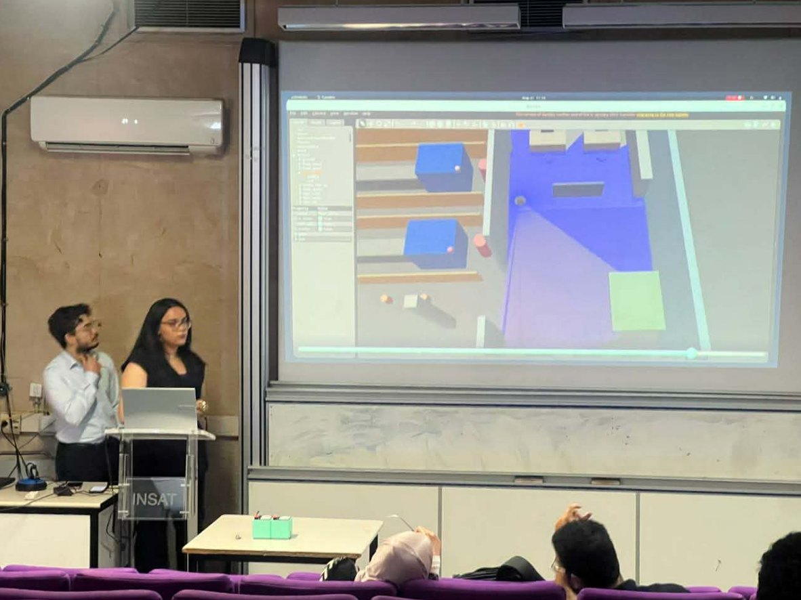
Presenting the Gazebo simulation at our defense.Présentation de la simulation Gazebo lors de la soutenance.
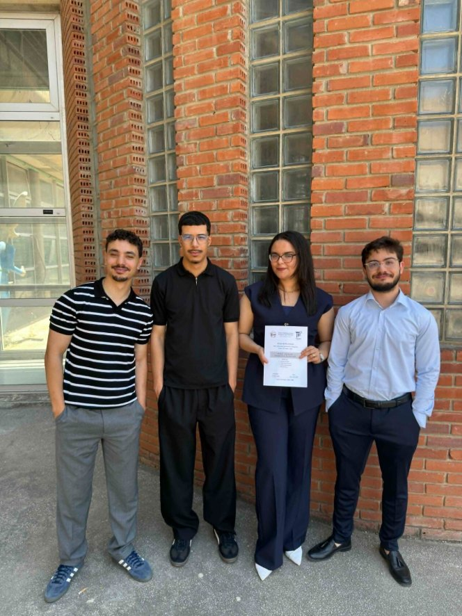
The team, right after.L'équipe, juste après.
Oct 2025 - Jun 2026Play Mind, La Marsa
Teaching robotics to kids
Enseigner la robotique aux enfants
Part-time, I ran robotics and STEM workshops for children aged 8 to 12, with Scratch, Arduino and robot kits. Explaining a sensor to a 9-year-old is a very good test of whether you really understand it.
En parallèle de mes études, j'ai animé des ateliers de robotique et de STEM pour des enfants de 8 à 12 ans, avec Scratch, Arduino et des kits robots. Expliquer un capteur à un enfant de 9 ans, c'est un bon test pour savoir si on l'a vraiment compris.
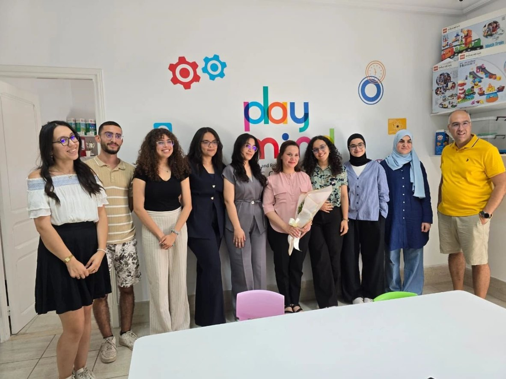
The Play Mind coaches, on my last day.L'équipe de coachs Play Mind, le jour de mon départ.
Aug 2025Gammarth
IEEE R8 MENA SYP 2025
I represented INSAT at this regional IEEE congress: workshops on AI and enterprise architecture, the poster session at our student branch stand, and people from more than 15 countries.
J'ai représenté l'INSAT à ce congrès régional IEEE : ateliers sur l'IA et l'architecture d'entreprise, session posters sur le stand de notre branche, et des participants de plus de 15 pays.
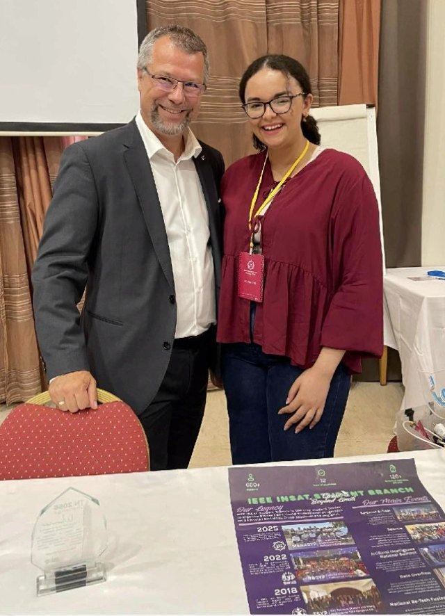
At the IEEE INSAT stand, poster session.Sur le stand IEEE INSAT, session posters.
Jul 2025Tunisair Technics
Internship in aircraft maintenance
Stage en maintenance aéronautique
A month in the hangars: quality control and maintenance of hydraulic and pneumatic systems, and time in engine maintenance, calibration, brakes and wheels, structure and painting. The best moment was a ground engine run test on an Airbus A319, after the team fixed a VSV motor issue.
Un mois dans les hangars : contrôle qualité et maintenance des systèmes hydrauliques et pneumatiques, et des passages en maintenance moteur, étalonnage, freins et roues, structure et peinture. Le meilleur moment : un essai moteur au sol sur un Airbus A319, après la réparation d'un moteur VSV par l'équipe.
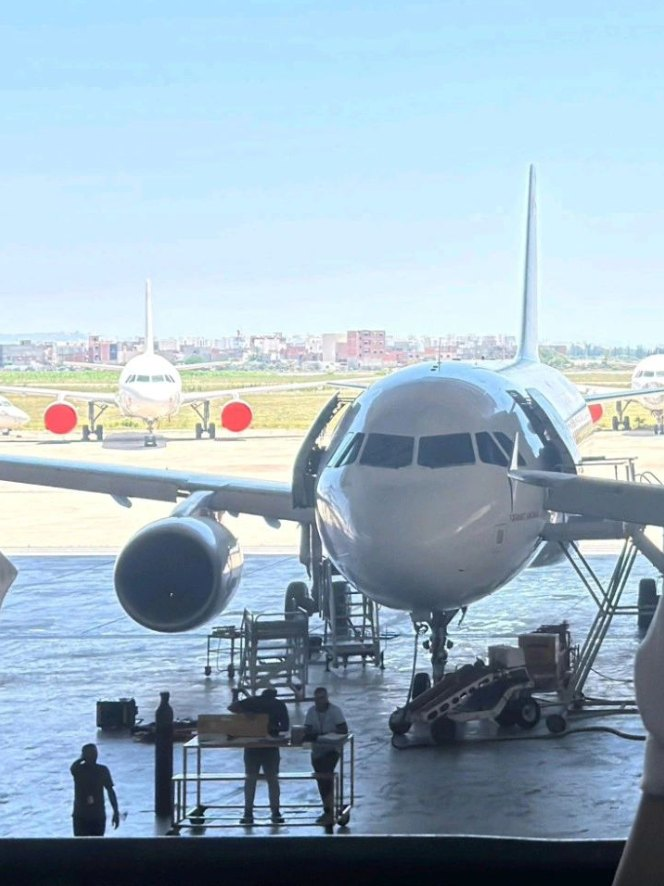
An A319 in the hangar.Un A319 dans le hangar.
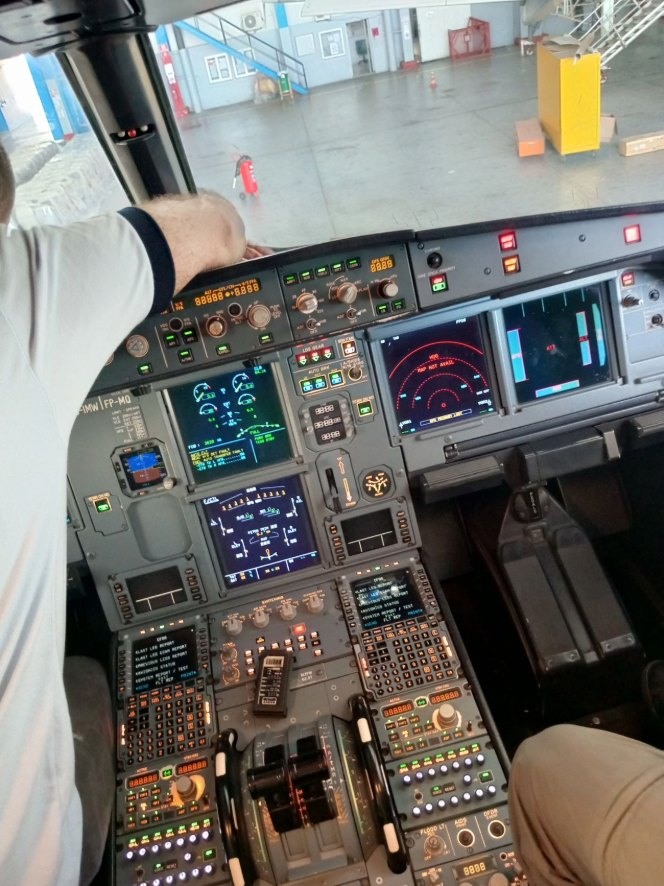
In the cockpit for the engine run test.Dans le cockpit pour l'essai moteur.
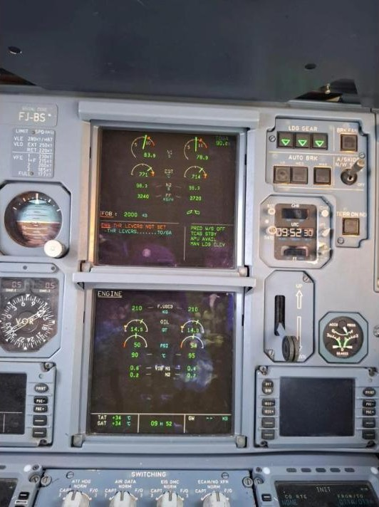
Engine parameters during the run.Les paramètres moteur pendant l'essai.
2024 - 2025IEEE WIE INSAT
Chairwoman, IEEE Women in Engineering
Présidente, IEEE Women in Engineering
One year leading a group of more than 100 members, with a small team I trusted. We managed the budget and the volunteers, ran our technical events, and built two apps: Spark, to get high-school girls interested in STEM, and VoltMind, an AI helper for circuit design.
Un an à la tête d'un groupe de plus de 100 membres, avec une petite équipe sur qui je pouvais compter. Nous avons géré le budget et les bénévoles, organisé nos événements techniques, et créé deux applications : Spark, pour donner envie aux lycéennes de faire des STEM, et VoltMind, un assistant IA pour concevoir des circuits.
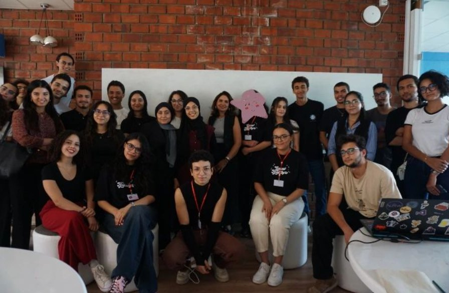
Part of the WIE INSAT community.Une partie de la communauté WIE INSAT.
Jul - Aug 2024Lacroix, Zriba (Zaghouan)
My first industrial internship
Mon premier stage en usine
Lacroix makes electronic boards. I followed the PCB production steps, the machines on the line and the tests that check each board, and learned the QRQC method the teams use every day to react fast to quality problems.
Lacroix fabrique des cartes électroniques. J'ai suivi les étapes de production des PCB, les machines de la ligne et les tests qui valident chaque carte, et j'ai découvert la méthode QRQC que les équipes utilisent chaque jour pour réagir vite aux problèmes qualité.
On the automation side: Siemens PLCs in TIA Portal, Ladder logic for production sequences, Profinet and Modbus. I also helped find why a robot arm kept failing: we traced it, step by step, to a sensor sending wrong signals to the PLC.
Côté automatisme : automates Siemens sous TIA Portal, logique Ladder pour des séquences de production, Profinet et Modbus. J'ai aussi aidé à trouver pourquoi un bras robot tombait en panne : nous avons remonté, étape par étape, jusqu'à un capteur qui envoyait de mauvais signaux à l'automate.
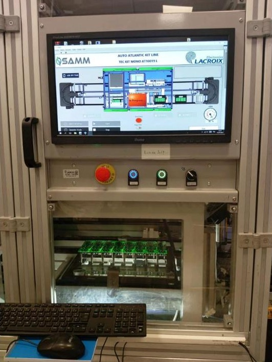
A test station on the line.Un poste de test sur la ligne.
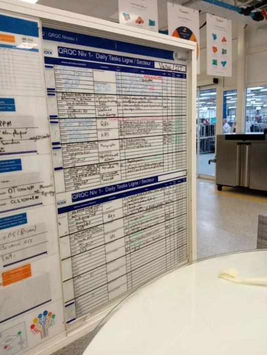
The QRQC board, updated every day.Le tableau QRQC, mis à jour chaque jour.
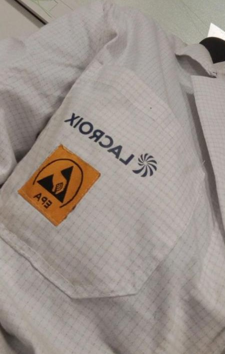
My ESD coat for the production area.Ma blouse antistatique pour la zone de production.
Other things I builtAutres projets
Vision system for quality controlVision pour le contrôle qualitéA camera on a Raspberry Pi 5 that sorts products, checks label position to under a millimeter, and reads the manufacturing date (OCR). Python, OpenCV.Une caméra sur Raspberry Pi 5 qui trie les produits, vérifie la position de l'étiquette au-dessous du millimètre et lit la date de fabrication (OCR). Python, OpenCV.
Two-tank level controlRégulation de niveau à deux bacsA nonlinear system modeled from scratch, a PID tuned in LabVIEW, then a real prototype with an Arduino and ultrasonic sensors. With Nour El Houda Oueslati, Nayrouz Saadaoui and Mohamed Zidane.Un système non linéaire modélisé de zéro, un PID réglé sous LabVIEW, puis un vrai prototype avec Arduino et capteurs ultrasons. Avec Nour El Houda Oueslati, Nayrouz Saadaoui et Mohamed Zidane.
Digital twin of an industrial systemJumeau numérique d'un système industrielA 3D model (SolidWorks), a flow simulation (Simulink) and real-time control (LabVIEW, Arduino), kept in sync.Un modèle 3D (SolidWorks), une simulation des flux (Simulink) et un pilotage en temps réel (LabVIEW, Arduino), synchronisés.
A full production cycle in SAPUn cycle de production complet sous SAPMaster data, BOMs, routings, MRP and production orders, with training from Wynsys Academy, INSAT's partner. We then visited the Gruner factory to see SAP on a real line.Données de base, nomenclatures, gammes, MRP et ordres de fabrication, avec la formation de Wynsys Academy, partenaire de l'INSAT. Puis une visite de l'usine Gruner pour voir SAP sur une vraie ligne.
Supply chain optimizationOptimisation de la supply chainLP/MILP models for production, transport and product mix, and an AnyLogic simulation to find bottlenecks.Modèles PL/PLNE pour la production, le transport et le mix produit, et une simulation AnyLogic pour trouver les goulots.
Tools I useMes outils
Lean
VS Matrix, VSM / VSD, 5S, Gemba walk, line balancing, root cause analysiséquilibrage de ligne, analyse des causes, 8D, AMDEC
PlanningPlanification
SAP / MRP, capacity planningplanification de capacité, LP / MILP, AnyLogic